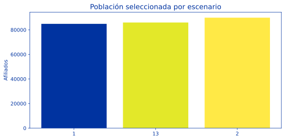
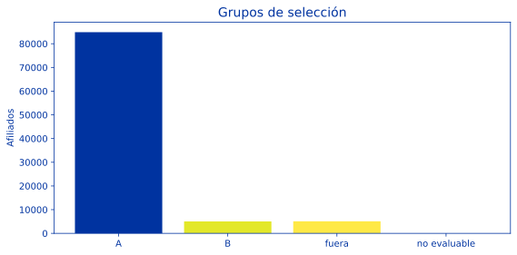

K(2): 89,917 seleccionados (94.64%); A 84,884; B 5,033. K(1,3): 85,956; incremento 3,961.
La mediana de edad de los seleccionados es 65.0 años; la del universo es 65.0 años. Sexo del titular (sexo1), seleccionado: F: 49,968; M: 39,949. Las distribuciones de riesgo, mesadas y beneficiarios figuran en las tablas de categorías; sus definiciones deben confirmarse.
Entre los seleccionados con K(1), 64,714 tienen bandera de descapitalización No. Con K(2), 69,747 tienen descapitalización No y 64,920 tienen desfinanciación No. No se interpretan como errores: confirmar definiciones, fecha, capitales y parámetros de cada regla institucional.
capital_necesario_def es el capital requerido en la cuenta de ahorro individual para financiar la mesada vigente, según confirmación del usuario.
La columna A sin encabezado tiene 95,011 valores presentes, 0 faltantes y 0 repeticiones. El número se utiliza exclusivamente para verificar unicidad de valores; no demuestra por sí solo unicidad de afiliados.
Las magnitudes monetarias están expresadas en pesos colombianos (COP), según lo confirmado por el usuario. Capital +Bono es una aproximación sujeta a confirmación institucional de disponibilidad y doble conteo. Se exige orden K(1) ≤ K(1,3) ≤ K(2) para la base común; los demás registros son no evaluables y no se corrigen. La pertenencia a retiro programado y las definiciones de las banderas requieren confirmación institucional. Las sumas de brechas individuales no son déficit actuarial de una bolsa. No se demuestra viabilidad ni ahorro.
| segmento | afiliados | porcentaje_universo |
|---|---|---|
| A | 84884 | 89.341234 |
| B | 5033 | 5.297281 |
| fuera | 5094 | 5.361484 |
| no evaluable | 0 | 0.000000 |
| escenario | seleccionados | porcentaje_universo | fuera | no_evaluables | capital_disponible_agregado | capital_requerido_agregado | mediana_disponible | mediana_requerido |
|---|---|---|---|---|---|---|---|---|
| 1 | 84884 | 89.341234 | 10127 | 0 | 1.212964e+13 | 4.658695e+13 | 9.390257e+07 | 5.531469e+08 |
| 13 | 85956 | 90.469525 | 9055 | 0 | 1.266020e+13 | 4.990000e+13 | 9.568691e+07 | 5.853258e+08 |
| 2 | 89917 | 94.638516 | 5094 | 0 | 1.508636e+13 | 7.070885e+13 | 1.024551e+08 | 7.960347e+08 |

